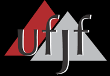

À propos de Moi
BIO
J'ai 24 ans. Je suis étudiant en 8ème période du cours Systèmes
d'Information à l'Université Fédérale de Juiz de Fora. Naturel et
résident de Juiz de Fora.
Mon intérêts incluent: les jeux vidéo, les échecs, les chats et les
défis mentaux.
-

Moniteur de structure de données
Java
J'étais le moniteur des disciplines Structure de données I et Laboratoire de programmation II.
-

Rinobot
C++
J'ai travaillé avec l'équipe Rinobot dans la sous-catégorie VSSS (Very Small Size Soccer) Computer Vision. Mes responsabilités étaient de documenter et de nettoyer le code.
Lors de mon séjour dans l'équipe, nous avons remporté une 3e place au concours WinterChallenge2018. -
Recherche scientifique
Python
J'ai travaillé sur le projet "Geração de Sequncias Curriculares Adaptativas baseada no Perfil dos Alunos e Materiais Didáticosutilizando o Algoritmo Presa-Predador"(Génération de séquences de programmes adaptatifs basés sur le profil des étudiants et du matériel pédagogique en utilisant l'algorithme Prey-Predator) avec extraction de données avec des algorithmes génétiques et évolutifs.
-
Achèvement des travaux de cours
Génie logiciel
Je fais actuellement mon TCC dans la correction et l'amélioration de l'outil BVR (Base Variability Resolution).
-
Grupo de Educação Tutorial(Groupe de formation sur le didacticiel)
Javascript
Lors de ma participation à l'équipe GET j'ai aidé au développement d'une application utilisant l'outil expo.